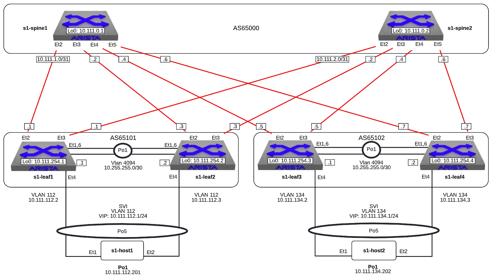

Layer 3 Leaf-Spine

Note
The manually-entered commands below that are part of this lab are
equivalent to L3LS_s1-leaf4_complete.
-
Log into the LabAccess jumpserver:
- Type
l3lsat the prompt. The script will configure the datacenter with the exception of s1-leaf4.
Note
Did you know the "l3ls" script is composed of Python code that uses the CloudVision Portal REST API to automate the provisioning of CVP Configlets. The configlets that are configured via the REST API are
L3LS_s1-spine1,L3LS_s1-spine2,L3LS_s1-leaf1,L3LS_s1-leaf2,L3LS_s1-leaf3,L3LS_s1-leaf4. - Type
-
Configure SVI and VARP Virtual IP on the s1-leaf4 switch using the following criteria
-
Create the vARP MAC Address in Global Configuration mode
Note
Arista EOS utilizes the Industry-Standard CLI. When entering configuration commands, be sure to first type
configureto enter configuration mode. -
Create the VLAN, SVI and the Virtual Router Address
-
Validate the configuration with the following:
s1-leaf4#show ip interface brief Address Interface IP Address Status Protocol MTU Owner ----------------- --------------------- ------------ -------------- ---------- ------- Management0 192.168.0.15/24 up up 1500 Vlan134 10.111.134.3/24 up up 1500 Vlan4094 10.255.255.2/30 up up 1500 s1-leaf4#show ip virtual-router IP virtual router is configured with MAC address: 001c.7300.0034 IP virtual router address subnet routes not enabled MAC address advertisement interval: 30 seconds Protocol: U - Up, D - Down, T - Testing, UN - Unknown NP - Not Present, LLD - Lower Layer Down Interface Vrf Virtual IP Address Protocol State --------------- ------------- ------------------------ -------------- ------ Vl134 default 10.111.134.1 U active
-
-
Configure BGP on the s1-leaf4 switch using the following criteria
-
Based on the diagram, configure L3 interfaces to s1-spine1/s1-spine2 and interface Loopback0
-
Validate the configuration with the following:
s1-leaf4#show ip interface brief Address Interface IP Address Status Protocol MTU Owner ----------------- --------------------- ------------ -------------- ----------- ------- Ethernet2 10.111.1.7/31 up up 1500 Ethernet3 10.111.2.7/31 up up 1500 Loopback0 10.111.254.4/32 up up 65535 Management0 192.168.0.15/24 up up 1500 Vlan134 10.111.134.3/24 up up 1500 Vlan4094 10.255.255.2/30 up up 1500 -
Based on the diagram, turn on BGP and configure the neighbor relationships on s1-leaf4. eBGP to s1-spine1/s1-spine2 and iBGP to s1-leaf3.
Note
We are using a peer group to configure the neighbor attributes for the spines. This allows us to apply all bgp attributes within a group to each neighbor that is a member in a scalable method.
router bgp 65102 router-id 10.111.254.4 neighbor SPINE peer group neighbor SPINE remote-as 65100 neighbor SPINE send-community standard extended neighbor 10.111.1.6 peer group SPINE neighbor 10.111.2.6 peer group SPINE neighbor 10.255.255.1 remote-as 65102 neighbor 10.255.255.1 next-hop-selfNote
Since
neighbor 10.255.255.1 remote-as 65102specifies an iBGP peering relationship (because the ASN is the same as this switch65102), the receiving switch may not have a route to networks more than 1 hop away, hence the switches should each advertise that they are the next hop via theneighbor 10.255.255.1 next-hop-selfstatement. While this scenario is only 2 iBGP peers, in a network fabric with several iBGP peers, a switch inside an AS (and not on an edge) may not have a route to a switch in any external AS. -
Validate the configuration and neighbor establishment
s1-leaf4(config-router-bgp)#show active router bgp 65102 router-id 10.111.254.4 neighbor SPINE peer group neighbor SPINE remote-as 65100 neighbor SPINE send-community standard extended neighbor 10.111.1.6 peer group SPINE neighbor 10.111.2.6 peer group SPINE neighbor 10.255.255.1 remote-as 65102 neighbor 10.255.255.1 next-hop-self s1-leaf4(config-router-bgp)#show ip bgp summary BGP summary information for VRF default Router identifier 10.111.254.4, local AS number 65102 Neighbor Status Codes: m - Under maintenance Neighbor V AS MsgRcvd MsgSent InQ OutQ Up/Down State PfxRcd PfxAcc 10.111.1.6 4 65100 10 8 0 0 00:01:02 Estab 5 5 10.111.2.6 4 65100 9 9 0 0 00:01:02 Estab 5 5 10.255.255.1 4 65102 9 8 0 0 00:01:00 Estab 9 9
-
-
Configure networks on s1-leaf4 to advertise to s1-spine1/s1-spine2
-
Add the following networks to BGP announcements on s1-leaf4:
-
Verify that these networks are being advertised to the other Spines and Leafs
s1-leaf1#show ip route VRF: default Codes: C - connected, S - static, K - kernel, O - OSPF, IA - OSPF inter area, E1 - OSPF external type 1, E2 - OSPF external type 2, N1 - OSPF NSSA external type 1, N2 - OSPF NSSA external type2, B - Other BGP Routes, B I - iBGP, B E - eBGP, R - RIP, I L1 - IS-IS level 1, I L2 - IS-IS level 2, O3 - OSPFv3, A B - BGP Aggregate, A O - OSPF Summary, NG - Nexthop Group Static Route, V - VXLAN Control Service, M - Martian, DH - DHCP client installed default route, DP - Dynamic Policy Route, L - VRF Leaked, G - gRIBI, RC - Route Cache Route Gateway of last resort is not set B E 10.111.0.1/32 [200/0] via 10.111.1.0, Ethernet2 B E 10.111.0.2/32 [200/0] via 10.111.2.0, Ethernet3 C 10.111.1.0/31 is directly connected, Ethernet2 B E 10.111.1.0/24 [200/0] via 10.111.1.0, Ethernet2 C 10.111.2.0/31 is directly connected, Ethernet3 B E 10.111.2.0/24 [200/0] via 10.111.2.0, Ethernet3 C 10.111.112.0/24 is directly connected, Vlan112 B E 10.111.134.0/24 [200/0] via 10.111.1.0, Ethernet2 C 10.111.254.1/32 is directly connected, Loopback0 B I 10.111.254.2/32 [200/0] via 10.255.255.2, Vlan4094 B E 10.111.254.3/32 [200/0] via 10.111.1.0, Ethernet2 B E 10.111.254.4/32 [200/0] via 10.111.1.0, Ethernet2 C 10.255.255.0/30 is directly connected, Vlan4094 C 192.168.0.0/24 is directly connected, Management0 s1-leaf1#show ip bgp BGP routing table information for VRF default Router identifier 10.111.254.1, local AS number 65101 Route status codes: s - suppressed, * - valid, > - active, E - ECMP head, e - ECMP S - Stale, c - Contributing to ECMP, b - backup, L - labeled-unicast % - Pending BGP convergence Origin codes: i - IGP, e - EGP, ? - incomplete RPKI Origin Validation codes: V - valid, I - invalid, U - unknown AS Path Attributes: Or-ID - Originator ID, C-LST - Cluster List, LL Nexthop - Link Local Nexthop Network Next Hop Metric AIGP LocPref Weight Path * > 10.111.0.1/32 10.111.1.0 0 - 100 0 65100 i * 10.111.0.1/32 10.255.255.2 0 - 100 0 65100 i * > 10.111.0.2/32 10.111.2.0 0 - 100 0 65100 i * 10.111.0.2/32 10.255.255.2 0 - 100 0 65100 i * > 10.111.1.0/24 10.111.1.0 0 - 100 0 65100 ? * 10.111.1.0/24 10.255.255.2 0 - 100 0 65100 ? * > 10.111.2.0/24 10.111.2.0 0 - 100 0 65100 ? * 10.111.2.0/24 10.255.255.2 0 - 100 0 65100 ? * > 10.111.112.0/24 - - - - 0 i * 10.111.112.0/24 10.255.255.2 0 - 100 0 i * > 10.111.134.0/24 10.111.1.0 0 - 100 0 65100 65102 i * 10.111.134.0/24 10.111.2.0 0 - 100 0 65100 65102 i * 10.111.134.0/24 10.255.255.2 0 - 100 0 65100 65102 i * > 10.111.254.1/32 - - - - 0 i * > 10.111.254.2/32 10.255.255.2 0 - 100 0 i * > 10.111.254.3/32 10.111.1.0 0 - 100 0 65100 65102 i * 10.111.254.3/32 10.111.2.0 0 - 100 0 65100 65102 i * 10.111.254.3/32 10.255.255.2 0 - 100 0 65100 65102 i * > 10.111.254.4/32 10.111.1.0 0 - 100 0 65100 65102 i * 10.111.254.4/32 10.111.2.0 0 - 100 0 65100 65102 i * 10.111.254.4/32 10.255.255.2 0 - 100 0 65100 65102 i s1-leaf1#show ip route bgp VRF: default Codes: C - connected, S - static, K - kernel, O - OSPF, IA - OSPF inter area, E1 - OSPF external type 1, E2 - OSPF external type 2, N1 - OSPF NSSA external type 1, N2 - OSPF NSSA external type2, B - Other BGP Routes, B I - iBGP, B E - eBGP, R - RIP, I L1 - IS-IS level 1, I L2 - IS-IS level 2, O3 - OSPFv3, A B - BGP Aggregate, A O - OSPF Summary, NG - Nexthop Group Static Route, V - VXLAN Control Service, M - Martian, DH - DHCP client installed default route, DP - Dynamic Policy Route, L - VRF Leaked, G - gRIBI, RC - Route Cache Route B E 10.111.0.1/32 [200/0] via 10.111.1.0, Ethernet2 B E 10.111.0.2/32 [200/0] via 10.111.2.0, Ethernet3 B E 10.111.1.0/24 [200/0] via 10.111.1.0, Ethernet2 B E 10.111.2.0/24 [200/0] via 10.111.2.0, Ethernet3 B E 10.111.134.0/24 [200/0] via 10.111.1.0, Ethernet2 B I 10.111.254.2/32 [200/0] via 10.255.255.2, Vlan4094 B E 10.111.254.3/32 [200/0] via 10.111.1.0, Ethernet2 B E 10.111.254.4/32 [200/0] via 10.111.1.0, Ethernet2 -
Add in multiple paths by enabling ECMP, on s1-leaf4, jump into BGP configuration mode and add:
-
Check the BGP and IP route tables on s1-leaf4 as well as each of the Spines and Leafs
s1-spine1#show ip route VRF: default Codes: C - connected, S - static, K - kernel, O - OSPF, IA - OSPF inter area, E1 - OSPF external type 1, E2 - OSPF external type 2, N1 - OSPF NSSA external type 1, N2 - OSPF NSSA external type2, B - Other BGP Routes, B I - iBGP, B E - eBGP, R - RIP, I L1 - IS-IS level 1, I L2 - IS-IS level 2, O3 - OSPFv3, A B - BGP Aggregate, A O - OSPF Summary, NG - Nexthop Group Static Route, V - VXLAN Control Service, M - Martian, DH - DHCP client installed default route, DP - Dynamic Policy Route, L - VRF Leaked, G - gRIBI, RC - Route Cache Route Gateway of last resort is not set C 10.111.0.1/32 is directly connected, Loopback0 C 10.111.1.0/31 is directly connected, Ethernet2 C 10.111.1.2/31 is directly connected, Ethernet3 C 10.111.1.4/31 is directly connected, Ethernet4 C 10.111.1.6/31 is directly connected, Ethernet5 S 10.111.1.0/24 is directly connected, Null0 B E 10.111.112.0/24 [200/0] via 10.111.1.1, Ethernet2 via 10.111.1.3, Ethernet3 B E 10.111.134.0/24 [200/0] via 10.111.1.5, Ethernet4 via 10.111.1.7, Ethernet5 B E 10.111.254.1/32 [200/0] via 10.111.1.1, Ethernet2 via 10.111.1.3, Ethernet3 B E 10.111.254.2/32 [200/0] via 10.111.1.1, Ethernet2 via 10.111.1.3, Ethernet3 B E 10.111.254.3/32 [200/0] via 10.111.1.5, Ethernet4 via 10.111.1.7, Ethernet5 B E 10.111.254.4/32 [200/0] via 10.111.1.5, Ethernet4 via 10.111.1.7, Ethernet5 C 192.168.0.0/24 is directly connected, Management0 s1-spine1#show ip bgp BGP routing table information for VRF default Router identifier 10.111.0.1, local AS number 65100 Route status codes: s - suppressed, * - valid, > - active, E - ECMP head, e - ECMP S - Stale, c - Contributing to ECMP, b - backup, L - labeled-unicast % - Pending BGP convergence Origin codes: i - IGP, e - EGP, ? - incomplete RPKI Origin Validation codes: V - valid, I - invalid, U - unknown AS Path Attributes: Or-ID - Originator ID, C-LST - Cluster List, LL Nexthop - Link Local Nexthop Network Next Hop Metric AIGP LocPref Weight Path * > 10.111.0.1/32 - - - - 0 i * > 10.111.1.0/24 - - - - 0 ? * >Ec 10.111.112.0/24 10.111.1.1 0 - 100 0 65101 i * ec 10.111.112.0/24 10.111.1.3 0 - 100 0 65101 i * >Ec 10.111.134.0/24 10.111.1.5 0 - 100 0 65102 i * ec 10.111.134.0/24 10.111.1.7 0 - 100 0 65102 i * >Ec 10.111.254.1/32 10.111.1.1 0 - 100 0 65101 i * ec 10.111.254.1/32 10.111.1.3 0 - 100 0 65101 i * >Ec 10.111.254.2/32 10.111.1.3 0 - 100 0 65101 i * ec 10.111.254.2/32 10.111.1.1 0 - 100 0 65101 i * >Ec 10.111.254.3/32 10.111.1.5 0 - 100 0 65102 i * ec 10.111.254.3/32 10.111.1.7 0 - 100 0 65102 i * >Ec 10.111.254.4/32 10.111.1.7 0 - 100 0 65102 i * ec 10.111.254.4/32 10.111.1.5 0 - 100 0 65102 i s1-spine1#sh ip route bgp VRF: default Codes: C - connected, S - static, K - kernel, O - OSPF, IA - OSPF inter area, E1 - OSPF external type 1, E2 - OSPF external type 2, N1 - OSPF NSSA external type 1, N2 - OSPF NSSA external type2, B - Other BGP Routes, B I - iBGP, B E - eBGP, R - RIP, I L1 - IS-IS level 1, I L2 - IS-IS level 2, O3 - OSPFv3, A B - BGP Aggregate, A O - OSPF Summary, NG - Nexthop Group Static Route, V - VXLAN Control Service, M - Martian, DH - DHCP client installed default route, DP - Dynamic Policy Route, L - VRF Leaked, G - gRIBI, RC - Route Cache Route B E 10.111.112.0/24 [200/0] via 10.111.1.1, Ethernet2 via 10.111.1.3, Ethernet3 B E 10.111.134.0/24 [200/0] via 10.111.1.5, Ethernet4 via 10.111.1.7, Ethernet5 B E 10.111.254.1/32 [200/0] via 10.111.1.1, Ethernet2 via 10.111.1.3, Ethernet3 B E 10.111.254.2/32 [200/0] via 10.111.1.1, Ethernet2 via 10.111.1.3, Ethernet3 B E 10.111.254.3/32 [200/0] via 10.111.1.5, Ethernet4 via 10.111.1.7, Ethernet5 B E 10.111.254.4/32 [200/0] via 10.111.1.5, Ethernet4 via 10.111.1.7, Ethernet5Note
ECMP is now working - notice the new status code in the show ip bgp output on s1-leaf4
-
-
Validate connectivity from s1-host1 to s1-host2. From s1-host1 execute:
-
Verify s1-leaf4\'s IP address is in the traceroute path, either interface 10.111.1.7 via s1-spine1 or interface 10.111.2.7 via s1-spine2. If traffic is hashing via s1-leaf3\'s 10.111.1.5 or 10.111.2.5 interfaces perform the optional
shutdownsteps below on s1-leaf3 -
Rerun traceroute/verification from s1-host1 to s1-host2 then revert the
shutdownchanges on s1-leaf3
-
-
Other BGP features to play with if you have time:
-
Route Redistribution: For fun, do a
watch 1 diff show ip route | begin Gatewayon s1-leaf1 & s1-leaf2 and let those run while you execute the commandredistribute connectedbelow on s1-leaf3. You will see new routes being injected into the route tables of s1-leaf1 & s1-leaf2. -
Route Maps and Prefix-Lists: Below is an example of some basic Prefix-Lists and Route-Maps that can be used for BGP filtering. Note that this is just an example and will not impact route advertisement in the lab.
<Example> ip prefix-list BOGON-Prefixes seq 10 permit 10.0.0.0/8 ip prefix-list BOGON-Prefixes seq 20 permit 172.16.0.0/12 ip prefix-list BOGON-Prefixes seq 30 permit 192.168.0.0/16 ! route-map BOGONS permit 10 match ip address prefix-list BOGON-Prefixes ! route-map BOGONS deny 20 ! route-map InboundSP1 deny 10 sub-route-map BOGONS ! route-map InboundSP1 permit 20 set local-preference 200 ! router bgp 65102 neighbor UpstreamSP1 route-map InboundSP1 in -
BFD: BFD is a low-overhead, protocol-independent mechanism which adjacent systems can use instead for faster detection of faults in the path between them. BFD is a simple mechanism which detects the liveness of a connection between adjacent systems, allowing it to quickly detect failure of any element in the connection. Note that BFD is not running on the other devices so the BFD neighbor will not come up.
-
-
Troubleshooting BGP:
LAB COMPLETE!